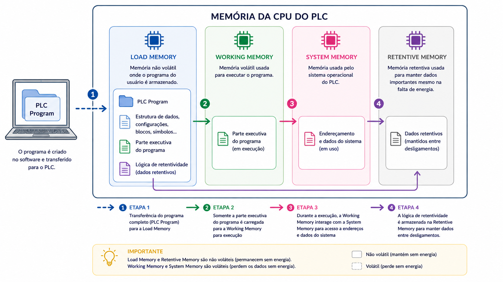

Texto Explicativo da Aula
A Memória Remanente (Retentive Memory)
Concluindo o estudo das quatro áreas de memória da CPU S7, chegamos à Memória Remanente (Retentive Memory), também chamada de memória retentiva ou memória persistente. Essa área representa uma solução fundamental para um dos desafios mais relevantes em sistemas de controle industrial: a retenção de dados críticos do processo mesmo diante de interrupções na alimentação elétrica.

O que é a Memória Remanente?
A Memória Remanente é a área da CPU destinada ao armazenamento permanente de dados operacionais que precisam ser preservados independentemente de falhas de energia ou desligamentos do sistema. Enquanto as memórias do Sistema e de Trabalho, baseadas em RAM, perdem seu conteúdo imediatamente quando a energia é cortada, a Memória Remanente garante que determinados dados sobrevivam a essas interrupções e estejam disponíveis quando o sistema for religado.
Para compreender a importância prática dessa área, considere o seguinte exemplo: um processo industrial utiliza um contador que registra o número de peças produzidas ao longo do turno. Se esse contador estiver armazenado em RAM convencional e ocorrer uma falta de energia, o valor acumulado será perdido e a contagem recomeçará do zero após o retorno da energia, comprometendo o controle de produção. Se o contador estiver configurado para utilizar a Memória Remanente, o valor acumulado será preservado e a contagem continuará do ponto onde parou, sem perda de informação.
Esse comportamento é igualmente importante para temporizadores em andamento, valores de setpoints ajustados pelo operador, flags de estado de processo e quaisquer outros dados que precisem persistir entre ciclos de energia.
Evolução Tecnológica: CPUs Antigas vs. Modernas
Assim como ocorreu com outras áreas de memória, a implementação da Memória Remanente também evoluiu ao longo das gerações de CPUs S7.
CPUs de Gerações Antigas
Nas CPUs mais antigas da família S7, a Memória Remanente era implementada de forma que os dados permaneciam armazenados de maneira estável mesmo na ausência de energia elétrica e independentemente da presença de bateria de backup. Essa característica era uma vantagem significativa, pois garantia a retenção de dados críticos sem depender de componentes externos sujeitos a desgaste.
CPUs S7-300
Nas CPUs da série S7-300, todos os dados configurados para a Memória Remanente são armazenados de forma permanente e incondicional nessa área. Não há condições especiais ou configurações adicionais necessárias, basta que o dado seja designado como remanente durante a programação para que sua retenção seja garantida automaticamente, independentemente de falhas de energia.
CPUs S7-400
Nas CPUs da série S7-400, voltadas para aplicações de maior porte e complexidade, o comportamento da Memória Remanente é condicionado a circunstâncias específicas definidas durante a configuração e programação do sistema. Isso significa que nem todos os dados marcados como remanentes serão necessariamente retidos em todas as situações: o comportamento depende das configurações realizadas no projeto, oferecendo maior flexibilidade e controle ao engenheiro responsável, ao custo de maior complexidade de configuração.
Quais Dados Podem Ser Armazenados na Memória Remanente?
Na programação do CLP S7, o engenheiro pode designar como remanentes diferentes tipos de dados presentes na Memória do Sistema e nos blocos de dados do programa, incluindo:
- Merkers (marcadores) remanentes: bits, bytes, palavras ou palavras duplas de memória interna configurados para retenção.
- Temporizadores remanentes: temporizadores cujo valor acumulado deve ser preservado após falta de energia.
- Contadores remanentes: contadores cujo valor acumulado deve persistir entre ciclos de energia.
- Blocos de dados (DB): blocos de dados do programa podem ser configurados com atributo remanente, preservando os valores de suas variáveis.
A definição de quais dados serão remanentes é realizada no ambiente de programação (STEP 7 ou TIA Portal), durante a configuração do hardware e a criação do programa.
Revisão Completa: As Quatro Áreas de Memória da CPU S7
Com o estudo da Memória Remanente concluído, é possível apresentar uma visão consolidada e comparativa das quatro áreas de memória que compõem a CPU S7, integrando todos os conceitos estudados nos capítulos anteriores.
1. Memória de Carga (Load Memory)
É a área responsável pelo armazenamento do programa completo transferido do computador para a CPU, incluindo código executável, configurações, comentários e dados auxiliares de projeto. Nas CPUs modernas, é implementada pelo cartão MMC (Flash EEPROM), que é não volátil e dispensa o uso de bateria de backup. O programa permanece íntegro mesmo após longos períodos sem energia.
2. Memória de Trabalho (Working Memory)
É a área onde a parte executável do programa é carregada e processada durante a operação do CLP. Funciona de maneira análoga à RAM de um computador: oferece alta velocidade de acesso, mas é volátil, perde seu conteúdo quando a energia é interrompida. A cada inicialização, o programa é recarregado automaticamente da Memória de Carga para a Memória de Trabalho.
3. Memória do Sistema (System Memory)
É a área que provê o espaço de endereçamento necessário para que a CPU identifique e gerencie cada elemento do processo. Contém as tabelas de imagem das entradas e saídas (atualizadas a cada ciclo de varredura), além de espaço para merkers, temporizadores e contadores. É baseada em RAM e, portanto, volátil, exceto pelos dados configurados como remanentes.
4. Memória Remanente (Retentive Memory)
É a área dedicada à retenção permanente de dados operacionais críticos, garantindo que informações importantes não sejam perdidas em caso de falta de energia. Sua implementação e comportamento variam conforme a série da CPU (S7-300 ou S7-400), mas em todos os casos sua função é assegurar a continuidade operacional do processo após interrupções de energia.
Tabela Comparativa Final
Exemplo Prático Aplicado
Cenário: Aplicação da Memória Remanente em um Sistema de Controle de Produção
Uma fábrica de embalagens plásticas utiliza um CLP S7-300 para controlar uma linha de injeção. O sistema precisa manter, mesmo após faltas de energia, os seguintes dados:
- Contador de peças produzidas no turno
- Valor de setpoint de temperatura do molde (ajustável pelo operador)
- Flag de indicação de manutenção pendente
Passo 1 - Identificação dos dados críticos
O engenheiro analisa o processo e identifica que a perda dos valores do contador de peças, do setpoint de temperatura e da flag de manutenção após uma falta de energia causaria problemas sérios: retrabalho no controle de produção, necessidade de reconfiguração manual pelo operador e risco de operação sem a devida notificação de manutenção.
Passo 2 - Configuração da remanência no STEP 7
No software STEP 7, o engenheiro acessa a configuração de hardware e define os intervalos de memória que serão remanentes:
- Os merkers M 10.0 a M 10.7 são configurados como remanentes (aqui será armazenada a flag de manutenção).
- O contador C 1 (contador de peças) é configurado como remanente.
- O bloco de dados DB5, que contém o setpoint de temperatura, é criado com o atributo remanente ativado.
Passo 3 - Operação normal e ocorrência de falta de energia
Durante a operação, o contador C 1 acumula 1.847 peças produzidas, o setpoint de temperatura está em 215°C e a flag de manutenção está ativa (M 10.0 = 1). Ocorre uma falta de energia não planejada de 40 minutos.
Passo 4 - Retorno da energia e verificação dos dados
Ao retornar a energia, a CPU inicializa automaticamente: recarrega o programa da Memória de Carga (MMC) para a Memória de Trabalho e restaura os dados remanentes. O operador verifica no painel:
- Contador C 1: 1.847 peças (valor preservado)
- Setpoint de temperatura: 215°C (valor preservado)
- Flag de manutenção: ativa (valor preservado)
A linha retoma a produção exatamente do ponto onde parou, sem necessidade de reconfiguração manual e sem perda de dados de produção.
Passo 5 - Comparação com dados não remanentes
O engenheiro observa que o merker M 20.0, que registrava se a esteira estava em movimento no momento da falta, voltou a zero após o retorno, pois não foi configurado como remanente. Esse comportamento é esperado e desejado: ao religar o sistema, é mais seguro que o CLP verifique novamente o estado atual da esteira antes de assumir qualquer condição prévia.
Conclusão: a correta utilização da Memória Remanente permite que o sistema de controle retome operações críticas sem perda de dados, enquanto dados que devem ser reiniciados a cada partida permanecem em RAM convencional, garantindo tanto a continuidade operacional quanto a segurança do processo.
Questões de Múltipla Escolha
-
Qual é a principal característica que diferencia a Memória Remanente das demais áreas de memória RAM do CLP S7?
A) É a área de maior velocidade de acesso, utilizada exclusivamente durante o ciclo de varredura
B) Armazena permanentemente os dados operacionais críticos, preservando-os mesmo em caso de falta de energia
C) É a área responsável por armazenar o programa completo transferido do computador para a CPU
D) Contém as tabelas de imagem das entradas e saídas atualizadas a cada ciclo de varredura
-
Em um CLP S7-300, como se comporta a Memória Remanente em relação à retenção de dados?
A) Os dados são retidos apenas se houver uma bateria de backup instalada na CPU
B) Os dados são retidos condicionalmente, dependendo de configurações específicas realizadas pelo engenheiro
C) Todos os dados configurados como remanentes são armazenados permanentemente, sem condições especiais
D) Os dados são retidos por no máximo 72 horas após a falta de energia, independentemente da configuração
-
Qual das situações abaixo justifica o uso da Memória Remanente em um sistema de controle industrial?
A) Armazenar o código executável do programa para que a CPU não precise recarregá-lo a cada ciclo
B) Preservar o valor acumulado de um contador de peças produzidas após uma interrupção de energia
C) Aumentar a velocidade de execução do programa ao reduzir o tempo de acesso às variáveis
D) Eliminar a necessidade do cartão MMC em CPUs modernas da família S7
-
Qual é a diferença no comportamento da Memória Remanente entre as CPUs S7-300 e S7-400?
A) Na S7-300, a remanência é configurada por hardware; na S7-400, é configurada exclusivamente por software
B) Na S7-300, todos os dados remanentes são retidos permanentemente; na S7-400, a retenção depende de circunstâncias específicas de configuração
C) Na S7-400, a Memória Remanente é maior e mais rápida; na S7-300, é menor e mais lenta
D) Na S7-300, a Memória Remanente é volátil; na S7-400, é implementada em Flash EEPROM
-
Quais tipos de dados podem ser configurados como remanentes no CLP S7?
A) Apenas o código executável do programa e os parâmetros de configuração de hardware
B) Apenas as tabelas de imagem de entradas e saídas da Memória do Sistema
C) Merkers, temporizadores, contadores e blocos de dados configurados com atributo remanente
D) Apenas os parâmetros de comunicação de rede e os endereços dos módulos do rack
-
Um operador ajusta o setpoint de temperatura de um forno industrial diretamente no painel do CLP. Após uma falta de energia, o valor retorna ao padrão de fábrica, obrigando o operador a reconfigurar manualmente. Qual é a solução mais adequada para evitar esse problema?
A) Instalar uma bateria de maior capacidade para manter toda a RAM alimentada indefinidamente
B) Configurar a variável de setpoint em um bloco de dados com atributo remanente na Memória Remanente
C) Armazenar o setpoint diretamente na Memória de Carga (MMC), realizando um novo download a cada ajuste
D) Utilizar um módulo de função (FM) dedicado para gerenciar os setpoints do processo
-
Ao recapitular as quatro áreas de memória da CPU S7, qual sequência descreve corretamente o caminho percorrido pelo programa desde o download até a execução?
A) Memória de Trabalho -> Memória de Carga -> Memória do Sistema -> Execução
B) Memória do Sistema -> Memória de Carga -> Memória de Trabalho -> Execução
C) Memória de Carga -> Memória de Trabalho -> Execução (com suporte da Memória do Sistema e Remanente)
D) Memória Remanente -> Memória de Carga -> Memória de Trabalho -> Execução
-
Por que é importante que apenas dados selecionados sejam configurados como remanentes, em vez de toda a Memória do Sistema?
A) Porque a Memória Remanente possui capacidade muito limitada e só suporta um único dado por vez
B) Porque alguns dados, como o estado instantâneo de dispositivos de campo, devem ser verificados novamente a cada partida por razões de segurança e consistência do processo
C) Porque dados remanentes consomem mais tempo de processamento durante o ciclo de varredura
D) Porque a configuração de remanência é irreversível e impede futuras modificações no programa
-
Um técnico verifica que, após o retorno de energia em um CLP S7-300, o contador de peças foi zerado, mesmo tendo sido configurado como remanente. Qual é a causa mais provável desse comportamento?
A) O cartão MMC foi corrompido durante a falta de energia, apagando as configurações de remanência
B) Foi realizado um reset de memória (MRES) durante o retorno de energia, apagando os dados remanentes
C) A Memória Remanente das CPUs S7-300 só preserva dados por até 30 minutos sem energia
D) O contador não foi corretamente configurado como remanente no software de programação; estava armazenado em RAM convencional
-
Considerando as quatro áreas de memória da CPU S7, qual combinação está corretamente associada às suas características de volatilidade?
A) Memória de Carga: volátil; Memória de Trabalho: não volátil; Memória do Sistema: não volátil; Memória Remanente: volátil
B) Memória de Carga: não volátil; Memória de Trabalho: volátil; Memória do Sistema: volátil (exceto dados remanentes); Memória Remanente: não volátil
C) Todas as quatro áreas são voláteis, diferenciando-se apenas pela velocidade de acesso
D) Memória de Carga: não volátil; Memória de Trabalho: não volátil; Memória do Sistema: volátil; Memória Remanente: volátil
Gabarito
1 - B | 2 - C | 3 - B | 4 - B | 5 - C | 6 - B | 7 - C | 8 - B | 9 - B | 10 - B